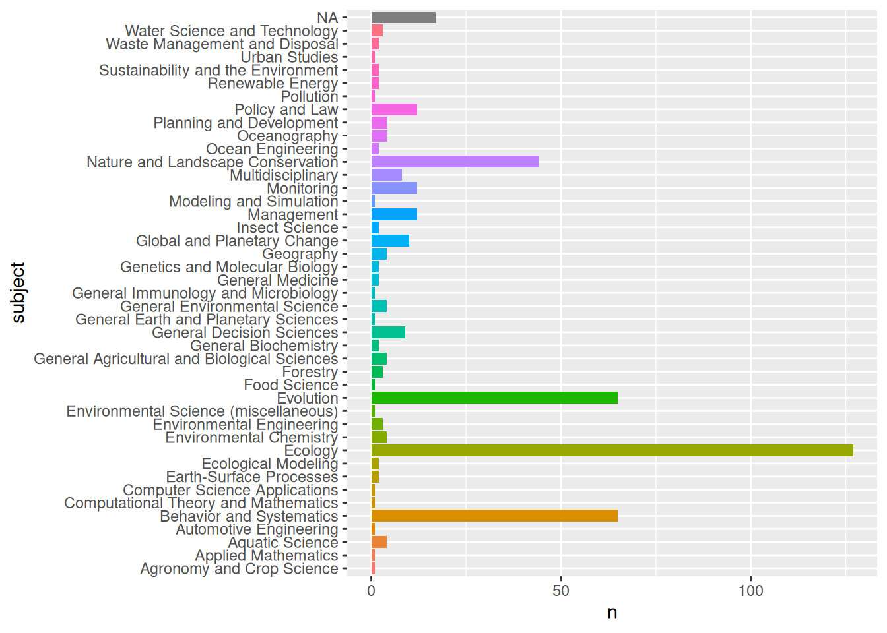

here::i_am("plots/citation-plot.qmd")here() starts at /home/jferrer/proyectos/IUCN-RLE/RLE-publication-listload(here::here("Rdata","CR-biblio-info.rda"))Loading required package: ggplot2
Attaching package: 'plotly'The following object is masked from 'package:ggplot2':
last_plotThe following object is masked from 'package:stats':
filterThe following object is masked from 'package:graphics':
layout
Attaching package: 'dplyr'The following objects are masked from 'package:stats':
filter, lagThe following objects are masked from 'package:base':
intersect, setdiff, setequal, union
Attaching package: 'lubridate'The following objects are masked from 'package:base':
date, intersect, setdiff, uniond <- ref.info$data %>%
select(doi, title, prefix,
short.container.title,
container.title, issued, is.referenced.by.count) %>%
mutate(
title = str_remove_all(title, "<[a-z/]+>") %>%
str_replace_all("Red List of Ecosyste(ms|m)","RLE"),
container.title = case_when(
prefix %in% c("10.32942") ~ "EcoEvoRxiv",
prefix %in% c("10.2305") ~ "IUCN",
is.na(container.title) ~ prefix,
TRUE ~ container.title),
short.container.title = coalesce(short.container.title, container.title) %>%
str_to_lower(),
citations=as.numeric(is.referenced.by.count),
date = case_when(
nchar(issued) == 10 ~ ymd(issued),
nchar(issued) == 7 ~ ym(issued),
nchar(issued) == 4 ~ ym(sprintf("%s-01",issued))
)) %>% mutate(
short.container.title = str_replace_all(short.container.title,
c("journal" = "j.",
"annals" = "ann.",
"association" = "assoc.",
"geographers" = "geog.",
"american" = "am."))
)Warning: There were 3 warnings in `mutate()`.
The first warning was:
ℹ In argument: `date = case_when(...)`.
Caused by warning:
! 32 failed to parse.
ℹ Run `dplyr::last_dplyr_warnings()` to see the 2 remaining warnings.[1] 119 9fig <- plot_ly(
d, x = ~date, y = ~short.container.title,
# Hover text:
text = ~sprintf("title: %s<br>doi: %s<br>Issued: %s<br>Citations: %d",
str_trunc(title,50), doi, issued, citations)
)
fig <- add_markers(fig, color = ~citations, size = ~citations)
layout(fig,
title = "Citations per publication",
xaxis = list(title="Issued (date)"),
yaxis = list(title="Journal / Repository / Publisher")
)Warning: `line.width` does not currently support multiple values.## Intro en https://poldham.github.io/abs/crossref.html
ref.info$data %>% count(subject, sort = TRUE)# A tibble: 37 × 2
subject n
<chr> <int>
1 Nature and Landscape Conservation,Ecology,Ecology, Evolution, Behavior… 22
2 Ecology,Ecology, Evolution, Behavior and Systematics 17
3 <NA> 17
4 Ecology,Ecology, Evolution, Behavior and Systematics,General Decision … 9
5 Multidisciplinary 8
6 Nature and Landscape Conservation,Ecology, Evolution, Behavior and Sys… 8
7 Nature and Landscape Conservation,Ecology,Global and Planetary Change 3
8 Ecology, Evolution, Behavior and Systematics 2
9 General Environmental Science,Ecology,Environmental Chemistry,Global a… 2
10 Management, Monitoring, Policy and Law,Aquatic Science,Oceanography 2
# ℹ 27 more rowsref.info$data %>% separate_longer_delim(subject, delim = ",") %>%
count(subject=str_trim(subject), sort = TRUE) -> subjects # output subjects
subjects %>%
ggplot2::ggplot(aes(subject, n, fill = subject)) +
geom_bar(stat = "identity", show.legend = FALSE) +
coord_flip()